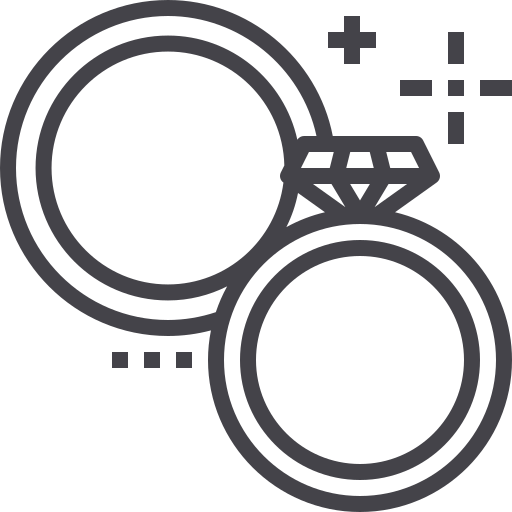
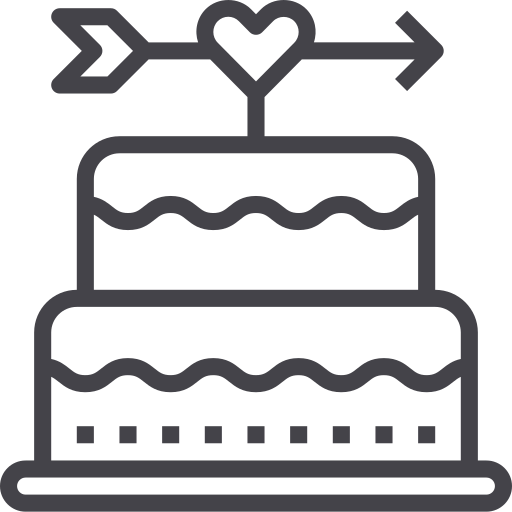

Helszínek
Szertartás
Fotózás
Mennyegző
Program
"Valahogy lesz, az biztos."
- 13:45 – Esküvői szertartás
- 14:30 – Fotózás
- 16:00 – Koktélok
- 18:00 – Vacsora
- 22:00 – Torta
- ... - 4:00 – Tánc hajnalig
Ajándékok
A legnagyobb ajándék számunkra az, hogy ott leszel.
Csak gyere el, és érezd jól magad velünk.
Kérdések & Válaszok
Utazás és szállás
Lesz szervezett transzfer?
Nem, csak találkozunk a templomnál 13:15-kor.
Hol tudok parkolni?
Hétvégenként ingyenes a parkolás az I. kerületben. A helyszínek közel vannak egymáshoz, nem lesz szükséged autóra.
Hogyan tudok éjjel hazamenni?
Az 916-os busz egész éjszaka jár, és minden fő közlekedési csomópontot érint a városban.
Kulináris élvezetek és ünnepség
Szeretnék valamilyen meglepetéssel készülni nektek a buliban. Kivel egyeztessek erről?
Szabó Abigéllel beszéld meg. Írj neki az abigel@awesomemail.com email címre.
Mit vegyek fel? Van valamilyen öltözködési szabály?
Viselj olyan ruhát, ami kényelmes számodra. Ha segít, az elegáns-alkalmi / laza-elegáns tökéletes választások.
Szeretnék valamilyen diétás ételt kérni (gluténmentes, laktósmentes, vegán stb.)
Írj nekünk itt és találunk rá megoldást.
Egyéb kérdések
Problémám / kérdésem van az esküvő napján. Kivel beszélhetek?
Szabó Abigéllel ezen a számon: +36 30 000 0000.
Hozhatjuk a gyerekeket?
Természetesen! Külön játék sarkot terveztünk nekik, hogy biztosan jól érezzék magukat.
Hogyan álltok a kutyákkal? Elhozhatom az enyémet?
Bár imádjuk a kutyákat, a templomba és a szállodába sajnos nem engedik be őket.
Kapcsolat
Ha bármilyen kérdésed van hívj vagy írj nekünk bátran.
Telefon: +36 30 000 0000 (Ági) / +36 30 000 0000(Zoli)
Email: zoliesagi@awesomemail.com